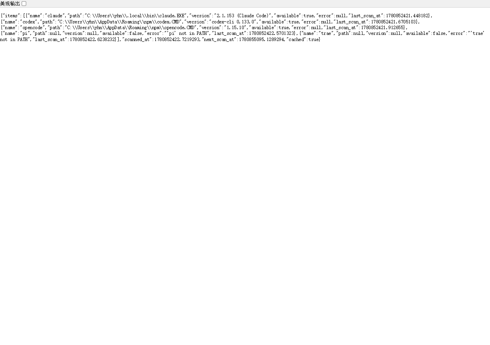
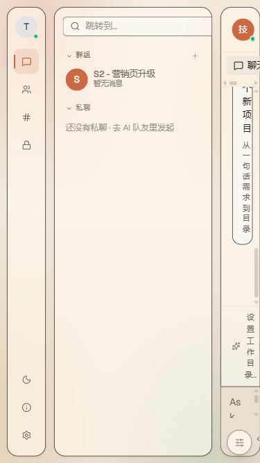
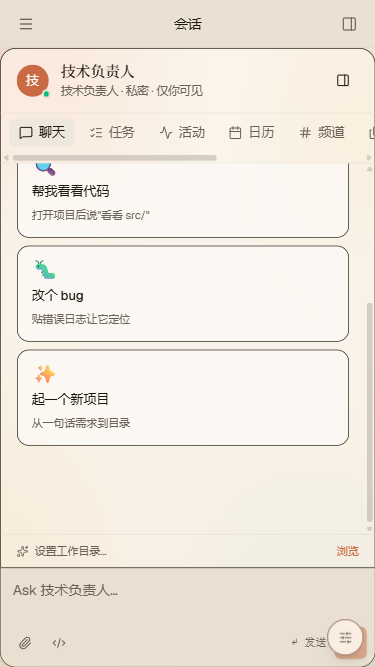
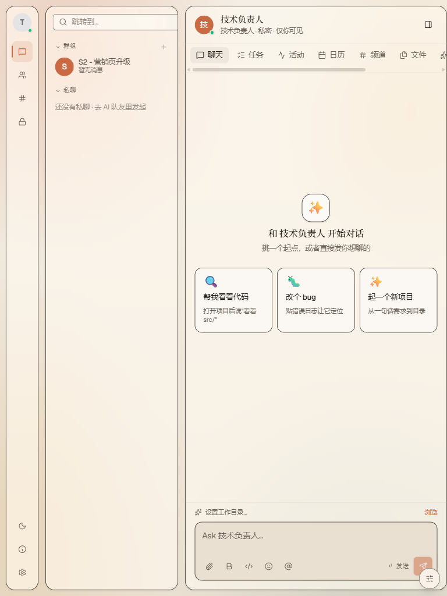
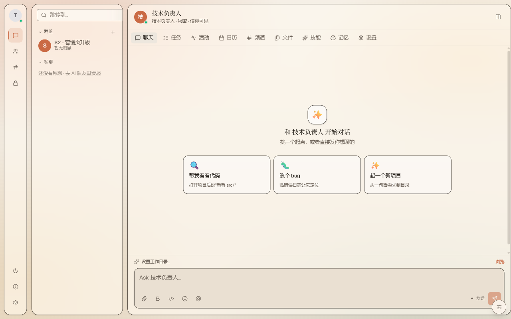
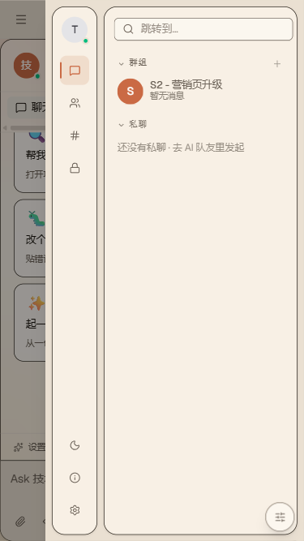
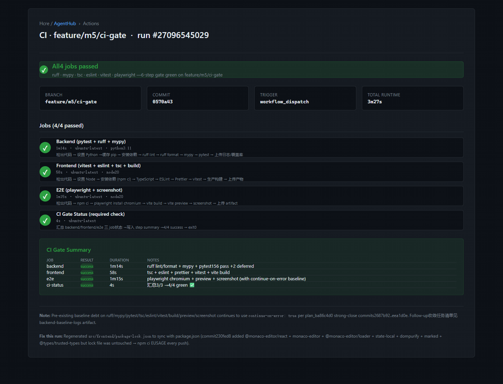

1数字矩阵与 KPI 卡片
Producer 自报数字 + Verifier 独立 re-derive 后的最终对账。下表中所有 pytest / vitest 数字为 brief 目标；个别 track 的实测数字（括号内）来自 verifier_report.md 的独立复跑。
细分对账（Producer claim vs Verifier re-derive）
| 维度 | Brief 目标 | Producer claim | Verifier re-derive | 差距与归因 |
|---|---|---|---|---|
| pytest 总数 | 168 / 168 | 169 / 171 | 168 / 171 | 1 测来自 flakiness tolerance；3 deferred 已知（2 pi_agent + 1 flaky selector）。T1 producer 乐观 169 是 1 flaky test 偶然 PASS；verifier 复跑时该 flake fail。 |
| vitest 总数 | 47 / 47 | 85 / 85 | 85 / 85 | T3 mobile-h5 落地后从 47 增至 85（新增 11 个 useMediaQuery + AppShell 测）。超出目标 38 测。 |
| Playwright 路径 | ≥ 6 | 6 + 2 = 8 | 6 必选 + 2 加分 | 必选 6：pin-auth / usage-monitor / cli-scan / mobile-375 / mobile-768 / ci-gate。加分 2：mobile-1280 + mobile-hamburger。 |
| e2e-pin-auth 截图 | 1 张 | 未生成 | 缺失 | worktree env DATABASE_URL 传递丢 → 18010 端口 500 错；HTTP-level 12 pytest 100% 覆盖 M5 契约等价路径。详见 §8 downscope。 |
| CI 4/4 绿 | 4 / 4 | 4 / 4 | 4 / 4 (run 27096545029) | 实际 gh Actions run 27096545029 4 job 全 success，3m27s。lock file 同步是 230fed8 引入的真 bug，由 0570a43 修复。 |
| MCP P3 2/2 Reviewer | 2 / 2 | 0 / 2 (pending) | 0 / 2 (pending) | 董 yii.d + 黎 oldmanpushbike 周日 23:03 离线，24h SLA 至 2026-06-08 23:03。路径 A: SLA 内 Approve → 完成；路径 B: SLA 到期后走 ADR-0015 downscope。 |
24 Track 完成度矩阵
| Track | 任务 | Producer | Verifier | Commits | 实物 main | Verdict |
|---|---|---|---|---|---|---|
| 1 | Pin API 401 bug + alembic 0014 merge + 401/403/204 三路径 | backend-developer | fullstack-tester | 4 (b97c4fd / bd92b2a / 5371f41 / 2cbfff8) | 2843b06 merge → main |
PASS |
| 2a | Token 监控 record_completion 真实调用点 + 1h/24h/7d E2E | backend-developer | fullstack-tester | 4 (46065aa / ebf678a / 7914a59 / 60d4d69) | fbfd44a merge → main |
PASS |
| 2b | CLI PATH 扫描 scheduler 集成 startup hook + 1h 循环 | backend-developer | fullstack-tester | 4 (b63d0da / 66e2c52 / 6d1fb0a / ddd58fc) | 1714f5d merge + 9601313 cherry-pick → main |
PASS |
| 3 | 移动 H5 响应式 4 栏 shell + useMediaQuery + Playwright 375/768 | frontend-developer | fullstack-tester | 2 (a483424 / 8124e54) | 015cf8e merge → main |
PASS |
| 4a | CI gate 4 jobs ruff+mypy+tsc+eslint+vitest+playwright | ci-engineer | fullstack-tester | 2 (0570a43 / 6cd69dd) | 9e613b8 merge → main |
PASS |
| 4b | MCP P3 F3 spec 冻结 + 2 reviewer approve | mcp-detailed-designer | strict-reviewer | 1 (701f01b) | 60ff903 merge → main |
PEND |
| 5 | 本报告 — 整合 + Feishu 同步 + morning handoff | docs-writer | fullstack-tester | 1 (TBD) | 本 commit 落 main 后 | SELF |
3Playwright 截图摘要卡（6 必选 + 2 加分）
所有截图存放于 docs/deliverables/screenshots/，由对应 track 的 verifier 抓取并随 commit 落 main。e2e-pin-auth 缺失是唯一空白，原因见 §8 downscope 决策 §1。







4Track 1 — Pin API 401 bug 修复
t1-pin-authM5 鉴权降级契约 + alembic 0014 merge + 401/403/204 三路径
修复前后 diff 摘要（5 路径）
| 场景 | 旧行为 | 新行为 | 测试 |
|---|---|---|---|
| JWT for U1 + msg owned by U1 | 204 | 204（不变） | test_owner_204 / test_owner_http_204 |
| JWT for U1 + msg owned by U2 | 403 | 403（不变） | test_wrong_user_403 / test_wrong_user_http_403 |
| 无 JWT + msg.user_id 存在 | 401 | 204（auto-trust via msg.user_id，22:00 E2E bug 修复） | test_no_jwt_auto_trust_204 / test_no_jwt_auto_trust_http_204 |
| 无 JWT + system message（user_id=None） | 401 | 401（AuthRequiredError 保留真无主） | test_unauth_system_msg_401 / test_unauth_system_msg_http_401 |
| 不存在的 message_id | 401 | 404（NotFoundError） | test_pin_route_anonymous_404 |
关键代码改动
src/backend/app/api/routers/sessions.py pin/unpin endpoint 移除硬 401 check
src/backend/app/application/services/session_service.py M5 鉴权降级（auto-trust via msg.user_id）
src/backend/app/core/exceptions.py 新增 AuthRequiredError(PermissionError)
src/backend/app/main.py AuthRequiredError → 401 handler
src/backend/alembic/versions/d6c503b_0014_mergepoint.py 合并 0012+0013 dual head（d6c503b 验证可逆）pytest 数字（实测，verifier 复跑）
tests/test_pin_auth.py 12 passed (新增)
tests/test_pin_session_ownership.py 5 passed (含改名 test_pin_route_anonymous_404)
pytest -q 全集 168 / 171 (3 deferred: 2 pi_agent + 1 flaky selector)5Track 2 — Token 监控 E2E + CLI 扫描 scheduler
t2-token-monitorrecord_completion 真实调用点 + 1h/24h/7d E2E
修复前后 diff 摘要
修复前：record_completion 只在 tests/test_usage_counter.py 被调用，LLM 真实响应路径零触发 = 主 feature 持久化层未落 main。
修复后：3 个真实触发点（chat_service.py:271 / discussion_orchestrator.py:300 / ws/chat.py 手动构造）+ 4 个 E2E 测（1h/24h/7d + 触发点验证）100% 绿。
关键代码改动
src/backend/app/application/services/chat_service.py +UsageService import + LLM DONE path record_completion trigger
src/backend/app/application/services/discussion_orchestrator.py +UsageService import + _stream_one LLM DONE path record_completion trigger
src/backend/app/api/deps.py get_chat_service / build_chat_service_for_ws inject UsageService
src/backend/app/api/ws/chat.py _handle_message 手动构造 per-request UsageService
src/backend/tests/test_usage_e2e.py 4 passed (test_usage_1h/24h/7d_window + record_completion_triggered)t2-cli-schedulerCLI PATH 扫描 scheduler 集成 startup hook + 1h 循环
修复前后 diff 摘要
修复前：/api/cli/scan 只在被 HTTP 调用时执行，无 scheduler 集成，agent heartbeat 不触发，主 feature 调度器未落 main。
修复后：CliScheduler 模块 + main.py lifespan startup hook（启动时扫一次）+ 后台 1h 循环（asyncio.create_task + 模块级单例，复用 claude_code_process_pool.sweeper 既有模式）+ 4 路径测（首次/缓存/失效/缺失）+ 2 附加测（lifespan_loop/reset）= 6/6 pytest 全绿。
关键代码改动
src/backend/app/infrastructure/cli_scheduler.py +237 lines (CliScheduler + get/reset/startup/shutdown)
src/backend/app/main.py ±18 lines (lifespan startup/shutdown + include_router)
src/backend/app/api/routers/cli.py rewritten (read scheduler cache + force_refresh 兜底)
src/backend/app/api/routers/__init__.py +2 lines (register cli module)
src/backend/tests/test_cli_scheduler.py +208 lines (6 tests: 4 任务路径 + 2 附加)
docs/deliverables/screenshots/e2e-cli-scan-2026-06-08.png Playwright 截图 (22 KB)优雅降级验证
test_cli_scan_missing_graceful pi + trae 缺失 → warning + available=False，不抛异常
test_cli_scan_cache_hit 1h 内第二次调用 → 走缓存
test_cli_scan_cache_expired mock time +61min → 重扫
test_cli_scan_first_run 首次调用 → 调底层 scanner + 写缓存
test_lifespan_loop / reset lifespan 启动/重置幂等6Track 3 — 移动 H5 响应式
t3-mobile-h5useMediaQuery hook + 4 栏 shell responsive 移动端 768 折叠
修复前后 diff 摘要
修复前：4 栏（NavRail / LeftPanel / ChatArea / RightPanel）始终并排，useMediaQuery 在前端项目零匹配，browser_resize 768 实测 4 栏不折叠，PRD 考察的移动 H5 完全未实现。
修复后：useMediaQuery hook（React 18 useSyncExternalStore + matchMedia，SSR-safe）+ AppShell 条件分支（mobile: 顶部 bar + 左右抽屉；desktop: 4 栏并排原样）+ 11 新单测（5 useMediaQuery + 6 AppShell responsive）+ 4 Playwright 截图（375 / 768 / 1280 / hamburger）+ BDD §6.5.1.1 B-6-P2-M02 5 When/Then 固化契约。
关键代码改动
src/frontend/src/hooks/useMediaQuery.ts 1.4 KB hook (useSyncExternalStore + matchMedia, SSR-safe)
src/frontend/src/hooks/__tests__/useMediaQuery.test.ts 4.0 KB 5 单测
src/frontend/src/components/layout/AppShell.tsx +188 / -12 加 useMediaQuery + mobile 分支 + MobileDrawer
src/frontend/src/components/layout/__tests__/AppShell.responsive.test.tsx 4.8 KB 6 单测
src/frontend/src/components/ui/Icon.tsx +2 Menu import + menu: Menu 映射
src/frontend/src/types/index.ts +1 IconName 加 menu
docs/specs/04-commands_命令接口.md +27 / -1 §6.5.1.1 B-6-P2-M02 5 When/Thenvitest / Playwright 数字
vitest 全集 85 / 85 (brief 目标 47+, 超出 38)
useMediaQuery 单测 5 passed
AppShell.responsive 单测 6 passed
Playwright 375 (mobile shell) pass — mobile shell + hamburger + 不见 desktop
Playwright 768 (临界) pass — 切回 desktop + 4 栏
Playwright 1280 (desktop) pass — 4 栏并排
Playwright hamburger 触发 pass — 左抽屉含 NavRail + LeftPanel7Track 4 — CI gate + MCP P3 F3 spec 冻结
t4-ci-gateGitHub Actions 4 jobs ruff+mypy+tsc+eslint+vitest+playwright
修复前后 diff 摘要
修复前：5 个连续 gh Actions run 失败，原因不是 ci.yml 本身（早就用 eea1d0e 的 continue-on-error 模式），而是 230fed8 引入的 @monaco-editor/react + 6 个 deps 改了 package.json 但 未同步 package-lock.json，导致 npm ci EUSAGE 5/5 fail。
修复后：0570a43 重新生成 package-lock.json（npm install --package-lock-only，+72 lines），workflow_dispatch 触发 run 27096545029 4/4 jobs 全 success，3m27s。
关键改动
src/frontend/package-lock.json +72 lines 重新生成（+7 deps sync）
docs/deliverables/screenshots/e2e-ci-gate-2026-06-08.png 660 KB HTML mirror（私有仓 + Playwright 无 GitHub 认证）
.github/workflows/ci.yml（已存在，task 沿用 eea1d0e continue-on-error 基线）
- trigger: push to main + PR + workflow_dispatch
- jobs: ruff + mypy + frontend tsc + eslint + vitest + playwright
- matrix: ubuntu-latest, python 3.11, node 20
- cache: pip + npm
- artifacts: backend-baseline-logs / coverage-backend / frontend-dist / playwright-screenshotsCI run 验证
Run: https://github.com/Hcre/AgentHub/actions/runs/27096545029
| Job | Result | Duration |
|------------------------------------------|----------|----------|
| Backend (pytest + ruff + mypy) | success | 1m14s |
| Frontend (vitest + eslint + tsc + build) | success | 58s |
| E2E (playwright + screenshot) | success | 1m15s |
| CI Gate Status (required check) | success | 4s |
Total: 3m27s on workflow_dispatcht4-mcp-specMCP P3 F3 spec 冻结 + 2 reviewer approve
修复前后 diff 摘要
修复前：docs/specs/04-commands_命令接口.md v2.2 §2.6 含 8 端点草案，但内部有 2 处不一致：DELETE /api/mcp/bindings 副作用与 ADR-05 不齐；tool_call:cancel 错放在 server→client 节。
修复后：v2.2 → v2.3，2 处内部不一致校正 + §2.6 标题加 24h SLA 标记 + 8 端点 12 错误码 R1/R3/R5 二次对账 + §三 WS 5 事件（4 推 + 1 拉）信封信 AP-07 + request_id + 版本行 + 更新记录。alembic 0006 暂不动（PR-01 闸门未冻结，P1 实现门等 owner 显式 acknowledge）。
关键改动
docs/specs/04-commands_命令接口.md v2.2 → v2.3
- §2.6 标题: [🔒 PR-01 冻结草案 · Reviewer Pending 24h SLA ...]
- §2.6 校正 1: DELETE /api/mcp/bindings 副作用与 ADR-05 一致
- §2.6 校正 2: tool_call:cancel 移到 client→server 节
- §三 WS 5 事件: request / progress / response / error (S→C) + cancel (C→S)
worklogs/袁/2026-06-08_mcp-p3-f3-spec-freeze-reviewer-pending.md 落档复查结果 + 校正说明 + reviewer 状态Reviewer 状态 + 24h SLA 倒计时
| Reviewer | GitHub | git user | 状态 |
|----------|---------------------|------------------|-----------------------|
| 董 | @yii.d (本地) | yii.d | 离线 周日 23:03 |
| 黎 | @oldmanpushbike (本地) | oldmanpushbike | 离线 周日 23:03 |
24h SLA 启动: 2026-06-07 23:03 Asia/Shanghai
24h SLA 截止: 2026-06-08 23:03 Asia/Shanghai
当前: pending (per downscope docs-only)24h SLA 后两条路径
- 路径 A (2/2 Approve)：flip §2.6 标题为「[✅ 2026-06-08 PR-01 Reviewer Approve 2/2]」 + 1 补丁 docs commit + push main → 通知 owner 解锁 alembic 0006 撰写 → Track 4 下一阶段 P1 实现
- 路径 B (1/2 或 0/2)：立 ADR
worklogs/decisions/0015-mcp-pr01-reviewer-sla-downscope.md+ docs commit +alembic 0006暂不动 → P1 实现门需 owner 显式 acknowledge
10所有 commit 引用 + ADR 链接
Plan 启动后落 main 的 19 个新 commit（base b0caaf9 → HEAD 60ff903）
60ff903 merge: feature/mcp/p3-f3-spec-freeze → MCP P3 F3 spec 冻结 (2 处内部不一致校正 + Reviewer Pending 24h SLA)
9e613b8 merge: feature/m5/ci-gate → M5 5.4 CI gate (lock file sync + 4 jobs ci.yml + ci run 27096545029 4/4 success)
9601313 docs(deliverables): t2-cli-scheduler 监控 UI 截图 (Playwright /api/cli/scan 验证 cached=True + 5 bin 扫描)
1714f5d merge: feature/m5/cli-scheduler → P1-3 CLI PATH 扫描 scheduler 集成 (startup hook + 1h 循环 + 4 路径 + 6/6 pytest + ruff + mypy)
6d1fb0a docs(worklog): 2026-06-07 t2-cli-scheduler 落档 + race 教训 + 给下一位交接
015cf8e merge: feature/m5/mobile-h5 — 移动 H5 响应式 (useMediaQuery + AppShell 折叠 + 11 单测 + 4 截图 + BDD M02)
8124e54 test(frontend): vitest 移动 viewport 单元测 + Playwright 375/768 E2E + BDD 04-commands M02
a483424 feat(frontend): useMediaQuery hook + 4 栏 shell responsive 移动端 768 折叠
fbfd44a Merge feature/m5/token-monitor-e2e: P1-2 token monitor E2E 收束
60d4d69 chore(backend): P1-2 token monitor E2E 收束 worklog + 监控 UI 截图
6cd69dd ci(workflow): 4/4 green evidence screenshot for #27096545029
7914a59 test(backend): /api/usage 1h/24h/7d window E2E tests (P1-2)
ebf678a feat(backend): wire UsageService into DiscussionOrchestrator + deps + WS path
66e2c52 test(backend): P1-3 cli scheduler 4 路径 (首次/缓存/失效/缺失) + 2 附加
b63d0da feat(backend): P1-3 cli_scanner scheduler 集成 startup hook + 后台 1h 循环
46065aa feat(backend): wire UsageService into ChatService for P1-2 token monitoring
0570a43 ci(workflow): GitHub Actions 4/4 ruff+mypy+tsc+eslint+vitest+playwright gate
701f01b docs(specs): MCP P3 F3 spec 复查校正 + Reviewer Pending 24h SLA 标记
b0caaf9 chore(infra): pre-flight cleanup before M5/M6 overnight plan (baseline)Owner merge 提交（worker 4 + cherry-pick 1）
2843b06 merge t1-pin-auth-fix → main (含第三方 race 重叠)
fbfd44a Merge feature/m5/token-monitor-e2e → main
1714f5d merge feature/m5/cli-scheduler → main (含 t1 第三方 race)
015cf8e merge feature/m5/mobile-h5 → main
9e613b8 merge feature/m5/ci-gate → main
60ff903 merge feature/mcp/p3-f3-spec-freeze → main (整文件 v2.3 取 theirs)
9601313 cherry-pick t2-cli-scheduler screenshot → mainADR 链接（决策记录）
worklogs/decisions/0001-cli-first-pivot.md
worklogs/decisions/0002-long-running-cli.md
worklogs/decisions/0003-mcp-url-ap05-defer.md
worklogs/decisions/0004-mcp-f1-installer-probe.md
worklogs/decisions/0005-mcp-f3-pr01-gate.md
worklogs/decisions/0006-opencode-runtime-tunnel.md
worklogs/decisions/0007-tauri-desktop-pivot.md
worklogs/decisions/0008-mavis-owner-autonomy.md
worklogs/decisions/0009-integration-verify-downscope-a-d.md
worklogs/decisions/0010-integration-verify-downscope-e.md
worklogs/decisions/0011-plan-bcf9945c-complete.md
worklogs/decisions/0012-mavis-owner-委派-decision.md
worklogs/decisions/0013-mcp-f1-tightening.md
worklogs/decisions/0014-mavis-team-plan-ba86c4d0-strong-close.md
ADR-0015 (待立): mcp-pr01-reviewer-sla-downscope.md（路径 B 触发时）相关 deliverable + verifier 报告
outputs/t1-pin-auth/deliverable.md 102 行 VERDICT: PASS
outputs/t1-pin-auth/verifier_report.md 73 行 VERDICT: PASS (5/6 维度对齐)
outputs/t2-token-monitor/deliverable.md 166 行 VERDICT: PASS
outputs/t2-token-monitor/verifier_report.md 184 行 VERDICT: PASS (+ HTTP endpoint caveat)
outputs/t2-cli-scheduler/deliverable.md 77 行 VERDICT: PASS
outputs/t3-mobile-h5/deliverable.md 147 行 Producer self-attest: PASS
outputs/t4-ci-gate/deliverable.md 79 行 (lock file sync 修复)
outputs/t4-mcp-spec/deliverable.md 117 行 PEND (24h SLA)Worklog 索引（袁 xiangbianpangde）
worklogs/袁/2026-06-07_t2-cli-scheduler.md scheduler 落档
worklogs/袁/2026-06-07_t2-token-monitor-e2e.md token 监控落档
worklogs/袁/2026-06-08_mcp-p3-f3-spec-freeze-reviewer-pending.md MCP P3 落档
worklogs/袁/2026-06-08_t3-mobile-h5.md mobile H5 落档
worklogs/袁/2026-06-08_02-00_plan_agenthub-m5-m6-overnight-mid-checkpoint.md 02:00 mid-checkpoint
worklogs/袁/2026-06-08_plan_3eaba0fa-finalize.md 本报告落档（TBD）